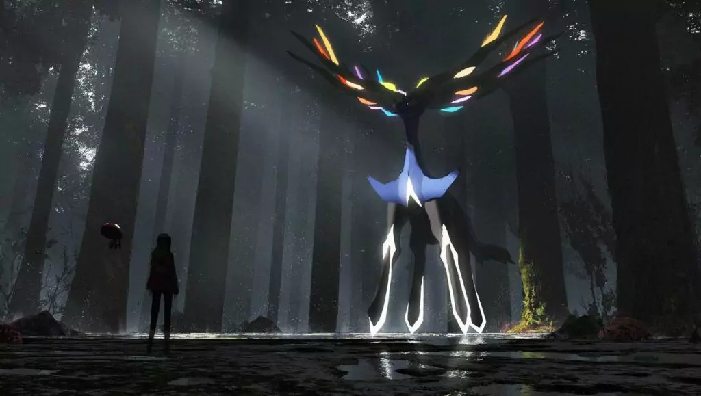

El tipo hada representa, principalmente, la pureza, la luz, el bien y el poder mágico, siendo esto lo más característico de esta especie. Se suelen encontrar, principalmente, en zonas al aire libre, rodeadas de flores o elementos similares. Fue introducido para equilibrar el poder superior de los Pokémon de tipo dragón, tal como se hizo en la segunda generación con los tipos acero y siniestro.
Legendarios
Xerneas - Es el Pokémon de la vida y tiene el poder de compartir la vida eterna, proviene de la sexta generación.
Zacian - Es un guerrero legendario de la región de Galar, una forma alternativa de Zacian que adquiere al empuñar una espada. Su tipo secundario cambia a Acero, proviene de la octava generación.

Megaevolución
Mega Gardevoir - El Pokémon Psíquico/Hada original se convierte en un Hada puro con un aumento significativo en su Ataque Especial y Velocidad.
Mega Mawile - Este Pokémon Acero/Hada mantiene sus tipos pero recibe un gran aumento en Ataque y Defensa. Su habilidad se convierte en Mandíbula Fuerte, que potencia sus movimientos de tipo Colmillo.
Mega Altaria - El Pokémon Dragón/Volador cambia su tipo Volador a Hada, convirtiéndose en Dragón/Hada. Obtiene un aumento en Ataque Especial y Defensa Especial, y su habilidad Piel Feérica convierte sus movimientos de tipo Normal en tipo Hada, además de potenciarlos.
Mega Arduino - Este Pokémon Normal puro se convierte en Normal/Hada al megaevolucionar. Recibe aumentos significativos en Defensa y Defensa Especial, y su habilidad Alma Cura le permite curar las condiciones de estado de un aliado al cambiar.
Gigamax
Alcremie Gigamax: Este Pokémon de tipo Hada puro se transforma en un enorme pastel de varios pisos. Su movimiento Gigamax, Gigamax Final, inflige daño al rival y cura a todos los Pokémon aliados.
Hatterene Gigamax: Este Pokémon de tipo Psíquico/Hada crece hasta alcanzar una forma imponente y elegante, con una larga cabellera ondulada. Su movimiento Gigamax, Gigamax Castigo, inflige daño al rival y confunde a todos los Pokémon rivales.
Grigmsnarl Gigamax: El pelo de este Pokémon de tipo Siniestro/Hada se expande y se vuelve increíblemente poderoso, similar a un taladro. Su movimiento Gigamax, Gigamax Dormitar, inflige daño al rival y puede adormecerlo en el siguiente turno.
Videos
Ayudanos a aportar
Tienes mas datos o información que puedas brindar para esta pagina, dejanos tus ideas.